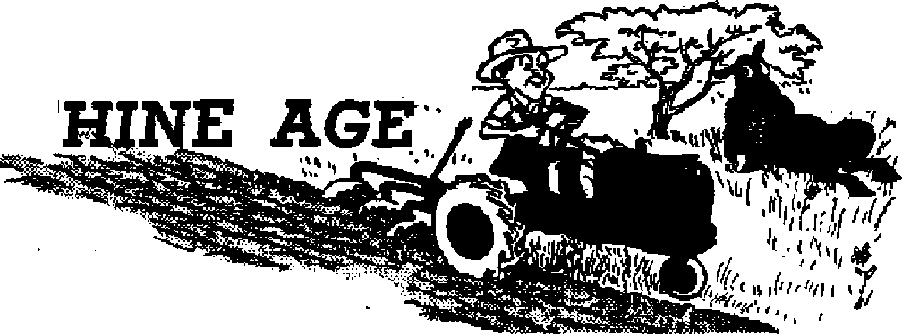

ASSEMBLY ALERTS THE WORLD!
Press report of New World society gathering
Quebec Priest Convicted for Attack on Jehovah’s Witnesses
Illegal actions of cleric condemned by Catholic magistrate
--a>
Building World Governments on Sand Foundations
Deserting the U.N. for world federation
Ethiopia—Africa’s Switzerland

Jews sources that are able to keep you awake to the yital Issues or our times must be unfettered by censorship and selfish Interests. "Awake 1” has no fetters. It recognizes fact;, faces facts, is free to publish facts. It Is not bound by political ambitions or obligations; it Is unhampered by advertisers whose toes must not be trodden on; it Is unprejudiced by traditional creeds. This journal keeps Itself free that it may speak freely to you. But it does not abuse its freedom. It maintains integrity to truth.
“Awake 1** uses the regular news channels, but Is not dependent on them. Its own correspondents are on all continents, in scores of nations. From the four corners of the earth their uncensored, on-fhc-scen.es reports come to you through these columns. This journal's viewpoint is not narrow, but is intemationaL It is read in many nations, in many languages, by persons of all ages. Through its pages many fields of knowledge pass in review—government, commerce, religion, history, geography, science, social conditions, natural wonders*—why, its coverage is as broad as the earth and as high as the heavens.
"Awake 1” pledges itself io righteous principles, to exposing hidden foes and subtle dangers, to championing freedom for all, to comforting mourners and strengthening those disheartened by the failures of a delinquent world, reflecting sure hope for the establishment of a righteous New World.
Get acquainted with "Awake 1° Keep awake by reading "Awakel”
Published Semimonthly By WATCHTOWER BIBLE AND TRACT SOCIETY, INC.
117 Adams Street Brooklyn 1, N. Y., U- S. A.
N. H KkObb, President Grant Suiter, Secretary
Printing this issue: 1,160,000
Five cents a copy
UaiMfti In wllrt Hih maguin* it pgbl^hid; fietniEmthly—Afrikaans, Endisii, Finnish, French, German. Hoiltudiuh, NwwtEten, Spauiah, Swedish. Monthly—Daniel), Greek, rwtu«u«M, Eknlnha.
Offices Tetrly subscription Rite
Amarita, U.S,. 117 Adams St., Brooklyn 1. NX Si Aaltrali*, 11 Beterfm-d Rd., Strithlkld, N.S.W. Canada. 40 Irwin Ave., Toronto 5, Ontario fl England, 34 Craven Terrace, London, W. 2 Jt South ATrlct, Print* Ba®, Elmdstootein,
TYamyaal It
fleulthnew should be sent to office in your unja try in compilinee with regulations to guarantee safe delivery of money. EemltUnca ire accepted al Brooklyn from countries where no office Is located, hr International money order only. Subscription rates in different Countries are here stated in local curreney. Notice of expiration (with renewal blank) is sent at least two Issues before subscription expires, Change of address when sent to our office may be expected effective within one month, Send your old as well as new address.
Entered u MCMd-riSss matter at Brooklyn, K Y. Act of March 3, 1879. Printed In U. S. A.
CONTENTS
Quebec Priest Convicted for Attack
Building World Governments on
Death Lurks at Railroad Crossings
Battlefield Deaths versus
"Your Word Is Truth” Welcoming Back the Dead
Jehovah’s Witnesses Preach in
Volume XXXIV
Brooklyn, N. Y., Novembers, 1953
Number 21
Illegal Actions of Cleric Condemned by Catholic Magistrate
By "Awake!” correspondent in Canada
IN THE province of Quebec Catholic priests are commonly regarded as above the law. It was a serious blow to their arrogance when on July 31,1953, one was convicted by a Catholic magistrate and sentenced to fine or imprisonment due to his illegal actions against Jehovah’s witnesses. But how could this happen in Catholic-controlled Quebec, you ask?
Several of Jehovah’s witnesses had gone to the Quebec village of Vai Senneville to call quietly at the homes of the people and encourage home Bible study. Such study is sadly neglected among the Catholic population. Ordinarily they do not even have a Bible and are often forbidden to read one. The parish priest, one Georges Beland, was outraged at the visit and at the idea that anyone should open the Bible to “his” people. He ordered the witnesses out of town, threatening mob violence and even death if they did not go. To support his orders he pulled out a pair of handcuffs and a police badge, pretending he was also an official. This was not true and proved to be his undoing.
Threatening people with violence to force them to do something is an offense under the Criminal Code of Canada.> Accordingly the priest was charged with intimidation under this provision of the law.
“Father” Beland assumed an air of injured innocence, pretending that he was really only trying to keep the peace when he ordered Jehovah’s witnesses out of town. “Why, the people might get excited and cause a riot!” The proof revealed that he was the only one excited. The people were not disturbed. Beland swore he had received many complaints about the visits of Jehovah’s witnesses. When pressed in cross-examination for the names, he gave one and said all the others were a professional secret. Magistrate Felix Allard said there was no professional secret and ordered him to answer.
Now the story changed: the names that a moment before were a secret he now swore he had conveniently forgotten. This equivocation and his elastic memory only proved that there were np such complaints. It was the priest who was trying to get Jehovah’s witnesses out of town; he was the only one excited. Not being honest enough to admit his persecuting course of action, he tried to pretend that the people were the ones getting disturbed and he was only innocently maintaining the peace.
In fact, the French Canadian people left alone are a kindly and law-abiding people. To pretend they are such barbarians that it is not safe for any other group to preach there is an insult to them. The fact is that the barbarism, the heresy hunting, the hatred of liberty, the determination to suppress preaching of the Bible, must all be laid at the door of the Roman priests. They try to lay responsibility for their own misdeeds at the door of the uneducated populace. In fact, the general public often shows more sense than its clerical leaders.
All of Priest Beland’s protestations of innocence did not avail him. Though the magistrate himself was a French Catholic he was not misled by the empty arguments of the hierarchy. As a magistrate he was sworn to enforce the civil law and this he did with an integrity that is to be commended. The judgment of the court said:
“There is one patent fact admitted by the accused [Priest Beland]—his gesture of taking out of his drawer the police badge and pair of handcuffs and showing them to the complainant and his companion. These two objects were only in his custody in his office. He was neither a police officer nor a special constable at Vai Senneville. He was not invested with any authority to use them and could not, under the circumstances, use them. It appears to me evident and established that the defendant wished to make the complainant believe that he possessed authority which in reality was not his/His object in thus acting, unjustly and illegally, was to manifest on his part, not only his desire, but also his intention to force the complainant Danyleyko and his companion to leave Vai Senneville and that against their wishes as he succeeded in doing. The gesture of the defendant constitutes a threat to employ violence against the complainant.”
The magistrate next pointed out that Jehovah’s witnesses were lawfully exercising their rights of freedom of worship.
“It is indisputable that the complainant Danyleyko was at Vai Senneville with a set object, that of preaching to the people of that area the religious doctrines that he belongs to. It is well to underline here that freedom. of worship exists in our province of Queb'ec. It is recognized and sanctioned by law: The free exercise and enjoyment of religious profession and worship, without discrimination or preference . . . are by the constitution and laws of this province allowed to all Her Majesty’s subjects living within the same?
“We know it is a practice of Jehovah’s witnesses to pass at one time and another from door to door to preach their religious beliefs. That is what the complainant Danyleyko and his companions were doing. We have no proof establishing that he had acted in contravention of the terms of a by-law or violated the rights of private property, as for example if he had resisted the efforts of a homeowner to stop him from coming in. Even if such had happened, no law authorizes anyone to force him to leave Vai Senneville.
“Unfortunately for Father Beland, I maintain the complaint brought against him and declare him guilty/'
The priest’s attorney, argued that no penalty should be imposed. The magistrate, however, pointed out that the priest is a responsible citizen who should know better. Accordingly, a fine of $25 and costs (probably $100) was fixed with an alternative of fifteen days in jail. *
This case has served as a vindication of the lawful activities of ministers of Jehovah’s witnesses preaching in Quebec. Their work is a labor of love to open the treasures and comfort of the Scriptures to people who have long been denied access to them. The clergy try to paint the Christian ministry of Jehovah’s witnesses as a work of hate, because the truth of God’s Word exposes misdeeds of the Hierarchy. Jehovah’s witnesses will continue to proclaim the good news of God’s kingdom faithfully despite all the false charges and the illegal and criminal actions of representatives of the Hierarchy of Rome.
Let this conviction be a warning to other priests similarly minded who think they are above the law. There is one people who has no fear to call them to account for their wrongdoings. Their unlawful actions are also causing disgust among many honest Catholics both on and off the judicial bench who are wondering whv the Catholic Church is so weak in theology and truth that it has to resort to crime and violence to maintain itself.
cm/"
njTiwes*64V ’Witnesses' Set । ij parley। A
iF «JYtr aliblisHru irdiy, fodctd todty rtfci cj Hw Wat-kl
iW
THE extent of the publicity received by the New World Society Assembly of Jehovah’s Witnesses in Yankee Stadium, July 19 through 26, was literally astounding. Well over 2,100 different news dippings have been received in the Watch Tower’s offices from all over the United States and from most of the world this side of the Iron Curtain, The number of separate items received here, far from the complete number that were published, totaled around twenty thousand columninches of material!
A great amount of work was done by the convention’s publicity department to provide accurate and reliable information to the newsmen who covered and reported on this assembly, and this was evident in the general good quality of the material they wrote. Preliminary news releases were sent out to all New York dailies and weeklies, as well as to the news services, photo magazines, photo and picture services, radio and television stations and magazines. In New York, by the end of the convention, 65 daily newspapers had been served, 161 weekly newspapers, 33 news services, 19 magazines, 15 newsreel and photo services, 25 radio and seven television stations, as well as about 200 newspapers in New Jersey that were regularly provided information.
Radio broadcasts, in addition to those over WBBR, the Society’s New York station, included interviews and programs over WWRL, WLIB, WMCA and WABC, in addition to the NBC and CBS networks. Also, television stations WCBS and WABD carried programs, and, generally speaking, both radio and television newscasts gave excellent coverage of the assembly.
As to the extent of newspaper coverage in the New York area, full pages of pictures, history and doctrine were carried in the Brooklyn Eagle., July 19, the Plain-field (New Jersey) Courier-News, July 21, and in Harlem’s Amsterdam News and New York Age, July 25. Portions of the centerfold (the center pages always devoted to pictures) were given by the Mirror, July, 20 and 23, and the Dally News, July 16,19,20,26,27.
Total space allotted the ■ convention amounted to 462 column-inches in the Herald Tribune, 261 inches in the Daily News, 354 in the Journal-American, 472 In the Mirror, 251 In the Times, 378 in the Post, 320 In the World-Telegram and Sun, and so on, to the point that, among twelve of the area's largest papers, 4,000 columninches, or more than 330 feet of material, were published. Many smaller papers had shorter items, and by the time the assembly was over, 6,890 column-inches of convention news and pictures had been counted In 178 different daily and weekly papers in the New York area.
Multilingual and Nationwide
You did not have to read English to know of the assembly. It .was announced in the Chinese Journal and the Chinese Na-tionalist Daily, as well as in Spanish, Russian, Italian, Lithuanian, Greek, Hungarian, German, Polish and other-language papers in the New York area. The Finnish New Yorkin Uutiset called this “the sensational convention of Jehovah's witnesses/’ and New York's Swiss paper, Amerika-nische Schweizer Zeitung, announced that Swiss delegates were on the way. The Arabic As-Bayeh said this would be “the largest and greatest religious assembly of its kind up to this date/’
Not just, in New York had the publicity spread, but throughout all the United States as “home-town’’ people prepared to come. Newspapers of all descriptions, published in places of all sizes, told local residents of the assembly.
“57 from Casper Attend Witness Convention in N. Y./’ announced the Casper (Wyoming) Tribune-Herald. More than 600 Jehovah's witnesses would go from Houston, Texas, to the assembly, explained the Houston Post, which also carried a fine
3-coiumn picture of a local doctor and his family packing to leave.
World Scope
The gathering, though held in New York, was not a one-nation affair, and neither was the publicity confined to one land. Out in the Philippines the Manila Tbnes announced: “21 to attend meet of Jehovah's Witnesses." Over in Britain the South Yorkshire Times proclaimed: “Wombwell men to travel to mammoth convention/' In Lyon, France, Le Progres said: “Seven residents of Lyon, Jehovah’s Witnesses, ... will shortly be leaving for New York to attend an international convention of Jehovah's Witnesses, at Yankee Stadium.”
Samedi-Soir in Paris said, under the heading “Work for the Lord”: “The greatest religious demonstration ever to take place in the United States has just begun and is to be held for one week in New York where there are assembled 125,000 Jehovah’s witnesses. . . . For their convention they have taken over a car park covering nearly 100 acres. The kitchens cover nearly 17 acres and there are 40 giant ovens. From among the conveqtioners, butchers, electricians, carpenters, cooks, painters, musicians, etc., all form a team of 20,000 workers who give their time 'to the Lord/ work which normally would have represented a sum of $1,140,000 in salary.”
Le Provencidl in Marseilles said: “Marseilles will be represented at this great religious convention by a delegation of five persons/’ Le Parisien Lib£r& of Paris and other papers in Mulhouse, St. Etienne and Grenoble told of the assembly. "It is significant! " said La Liberte of Lagny-Chelles, “that in this materialistic age people will spend much money for the privilege of assembling together to worship Jehovah God.”
Three papers in Stockholm, Dagens
Nyheter, Stockholm^ TtMipm and Aftonbladet, told their Swedish readers rf the convention, and the latter published a picture of Jack Prambergx a Watch Tower missionary, being married to Karin Nilsson in the Yankee Stadium pressroom during the assembly,'
Pdlitiken, published in Denmark, reported, July 23: “The above picture from the opening of the congress does not include all th? 125,(XX) delegates as there was 'only* room for 82,000, , , . It is said to be the greatest congress in the history of the world, (In Sunday 150,000 people will attend the public lecture. It is a question whether Hitler or Mussolini ever managed to force so many people to attend their mass meetings.”
Africa, too, heard of the assembly. The Daily Mail of Freetown, Sierra Leone, reported, June 25, that West Africans would attend. The Ethiopian Herald said: 'This is the first time Ethiopia will be represented in such an International gathering of Jehovah's Witnesses.” The Central African Post told, June 26, that "Northern Rhodesia will be represented by a delegation of 16.”
In Latin America, also, the publicity was great. Residents of Caracas, Venezuela, read of 57 Venezuelan missionaries going to the convention of 125,000 Witnesses of Jehovah In New York. El Heruldo of that city published a picture of the assembly as “La mayor convenabn religiosa del mundo” (“the biggest religious convention in the world”), while Panorama of Maracaibo, Venezuela, announced: “Los testi-gos de Jshoud en el Yanqui Stadium” The British Guiana Daily Chronicle and Daily Argosy had articles and a picture of the local delegation. The Buenos Aires Herald in English and El Labarista in Spanish showed 64 of the delegates leaving from Buenos Aires for the assembly.
"The Netherlands Antilles will be rep-resaited by a delegation of 25 at tht ftrar-national Convention erf Jehovah's Witnesses, Yankee Stadium, New York Qty. Twelve of these will go from Aruba,” both the Local and the Aruba dfid-We&kfy reported to their readers. Other newspaper reports from the Netherlands West Indies were In Dutch, Papiamcnto, English and Spanish. "The convention’s theme Is tn show that people of all nations and races can have complete unity when God's Word, and Laws are the basis for what they do,” said the Aruba Esso Hewn, July 3.
"We hope that thousands of people will be baptized at this convention,” said the French UEmbuscade of Cap-Ilaitien, Haiti "26 Delegates from Haiti attend Jehovah Witnesses rally,” reported the Haiti Bun, which further called this "the greatest religious assembly ever held in America.”
Still More Publicity
EVen after the assembly was over Che publicity did not cease. Returning home, many of Jehovah’s witnesses reported on the convention’s results and accomplishments, and news editors recognized both the asembly's unusualness and the newsworthiness of such gatherings. One example was in the Bahamas where three Nassau papers, the Daily Tribune, Guardian and Herald; each took note of the return of the witnesses, and reported on the happenings at Yankee Stadium. Similar reports were published in newspapers throughout the United States and many other parte of the world-
Additionally, national magazines took note of the assembly. London’s Sphere carried a picture of the packed stadium, Newsweek devoted four columns to it; Time,, a column in one issue, a paragraph in the next. Others represented at the convention included Fair child Publications, Out World and Color, Radio Free Europe, the Foreign Press Association, the Asso-
elated Press, United Press and the newsreels: Parambunt News, Telenews, News of the Day, Fox Movietone News and CBS Television News.
Pittsburgh’s Family Magazine, published with the Sunday Pittsburgh (Pennsylvania) Press, was prompted to devote three full pages, August 23, to the Society’s first president, and compared the convention in 1393 with the one that had just been held. “The first convention brought out but a handful. At the recent convention at Yankee Stadium there were about 165,000 in attendance from 90 countries,’' it explained.
Indeed this gathering was a great spiritual feast and a marvelous testimony to the unifying power of true Christianity and the zeal of those who have it. With an attendance larger than the entire population of Nevada, more than half the size of Delaware, Wyoming or Luxembourg, its size alone amazed many people who live in places where the entire population is less than was the assembly’s attendance. Take, for example, the report in the Sandhill News of Mullen, Nebraska, that told of Simon Senk, a local resident, writing back reports on the tremendous crowds. Mullen has a population of some 524 and is the county seat of Hooker County, which has a population of 1,061. Before even hearing of the peak attendance of 165,829 at the assembly, the paper commented on a report that 82,861 had gotten into the stadium, and said: “My! We hope Mr. Senk doesn’t extend an invitation to the Witnesses to hold their next convention in Mullen.”
But Mullen need not worry, for if Jehovah’s witnesses did gather there, even in such numbers, reports that came from the vicinity' of the convention’s Trailer City in New Jersey indicate that Mullen could just sit back and enjoy having the witnesses around. A columnist for the Weekly OdR of little Dunellen, New Jersey (population 6,291), explained, July 16: “These people cause no disturbance, build their own city in the open fields with volunteer labor, pay for what they need, conduct themselves like ladies and gentlemen, keep their promises, clean up before they leave and are sincerely missed when the cars and trailers with license plates from everywhere head homeward, which will be too soon.”
Cause for Rejoicing and Thankfulness
Jehovah’s witnesses rejoice that such publicity and friendly editorial comments were given their assembly, but not because they are seeking honor or credit, nor because their glory is in numbers. They are few in any one place, but they rejoice in their scope, in being able to preach throughout the world, as the Scriptures show the true Christian organization would. Also, they rejoice in the spiritual strength and zeal that are evident when such multitudes will put forth the tremendous effort necessary to attend such assemblies, while the dying old world's religions have trouble in getting a churchful out on Sunday mornings.
Jehovah’s witnesses are thankful for the publicity that shows up these facts and alerts others to the efficiency, unity and harmony of the Christian New World society. Those who attended the assembly recognized that this efficiency and organization are not a result of the work of men, but come from the spirit of God, and they hope the wide publicity will aid thousands of others to likewise recognize this. They will press on in Kingdom service, following up the interest the assembly has aroused, helping others to see that Jehovah’s spirit is really with the New World society, and aiding those who wish to come to unity with it to do so, so that they too can receive of the marvelous blessings that it is receiving.
By “Awak*!” correspondent In Ethiopia Ethiopia of Bible times is not altogether the Ethiopia of today. It is fairly well established that the Ethiopia of the classical world lay to the north and to the west of present-day Ethiopia. Few ancient historians knew of the high tableland to the southeast where the ancient kingdom of Aksum stood, and which has grown into the Ethiopia of today, sometimes called Abyssinia. The ruins of the kingdom of Aksum found in the northern part of Ethiopia reveal a culture not related to the Egyptian, Greek or Roman, but slightly influenced by the Sabean civilization of southern Arabia. It was originally built by Semitic colonists from across the Red Sea. Later some Jewish element was introduced, which has left a definite mark upon some of the original pagan inhabitants.
Traditionally, the Judaized people of Ethiopia claim descent from the companions of Menelik I, reputedly the son of Solomon and the Queen of Sheba, and also from those Jews who fled into Egypt at the time of the Babylonian captivity. Interestingly, to this very day the descendants of these Jewish converts can be found living in the northwestern provinces of Ethiopia, carrying on their strange mixture of the worship enunciated in the Hebrew Scriptures and their pagan practice of worshiping "Sanbat,” the goddess of the Sabbath. They are said to be the only “Jews” in the world still offering sacrl-
In the fourth century after Christ "Christianity” was introduced from Alexandria, becoming the official religion of the Aksumlte kingdom of northern Ethiopia. The history of how this land has remained a part of Christendom is an absorbing one. Because of the geographic features of the land, the ancient civilizations of the Mediterranean world were unsuccessful in conquering this area that comprises modern Ethiopia. According to geologists, volcanic eruptions sometime in the distant past threw up a series of mountains to form a vast triangular plateau with an average elevation of 6,500 feet, and completely hemmed in by rough mountains, with precipitous valleys and gorges separating district from district and in some areas village from village. Additionally, scattered about over this plateau are steep and bare mountain cones called ambasf topped with fertile, well-watered plains excellent for cattle grazing and farming. Until the advent of modern weapons of warfare these ambus were invincible, self-sustaining natural strongholds, Quite fittingly the translator of the Amharic Bible has used “amba” in place of “rock” at Isaiah 26:4 (Am, Stan. Ver.): “Jehovah, even Jehovah, is an everlasting rock [amba: Amharic Bible].”
Ethiopia, because of its mountainous features, has often been likened to scenic Switzerland. The principal difference is: “In Switzerland, the heights are barren peaks, the valleys fairly broad and fertile. heights are mostly open plateaux, the valleys jungte-choKed gorges or canyons crt great depth. The population lives on the plateaux, and the lines of communication follow the high ground, the valleys being formidable obstacles to traffic/’—Handbook of Abyssinia, compiled by the British Foreign Office.
flees at the altar.
In Abyssinia, all this is reversed. The
These geographic features have contributed to Ethiopia's role that changed the whole course of African history. Ethiopia's natural alliance with the Semites of Asia was broken when the Mohammedan religion (Islam) threatened to spread over the African continent. There was scarcely a tribe, agricultural community or village that did not embrace Islam. “Yet, Abyssinia, by its purely individualistic resistance, . . . has helped to change the course of African history. Its highland fastnesses have been a rock against which the waves of expansion of the Islamic civilization fropi the Arabian Peninsula and East African coast on the one hand, and from the Nile valley on the other have dashed themselves in vain endeavor, so that Islam could not establish that stable rule on the east coast which would have led to interior expansion and possibly the religious unification of Africa under Islam."—in Ethiopia, by J. Spencer Trimingham.
Modern Ethiopia
That is a brief historical view of Ethiopia, Modem civilization, however, is leaving its mark on Ethiopia, though parts of the country are still comparatively inaccessible and inhabited by primitive tribes, like the Danakils whose territory has a long list of murders and massacres to its charge. The country’s one railroad, built by the French, runs from Djibouti, French Somaliland, at the southern end of the Red Sea, westward inland across the hot Somali Desert, and wends its way up through mountainous barren wastes to Addis Ababa’s more than 8,000-foot elevation. Until recent years this was the best way to enter Ethiopia,
Now air travel bridges the country with the rest of the world. Adie Suehsdorf in Wtnps for the Lion commented on the internal effect of air travel: “Each EAL (Ethiopian Air Lines) flight," he says, “like a slender steel cable, links Ethiopia’s isolated, far distant points more strongly to Addis and the Emperor. In minutes or hours, the airline spans territory it would take ground parties days or weeks to cover. Markets are growing for products which formerly withered for lack of transportation. . . . Ordinarily, a country’s road network serves these functions. But Ethiopia has only some 43,000 miles of road for an area larger than California, Arizona and Nevada combined. Three-quarters of this is donkey trail, and of the 11,000 miles rated as ‘motorable’, half is nearly impassable. As a result of such conditions, many provinces, while nominally paying allegiance to Addis, have operated in the past like sovereign states. EAL has helped to change this.”—Saga, September 1952.
Ethiopia’s weather, in the parts of the country exceeding 6,000 feet in elevation, is another commendable feature, leaving little to be desired. Though Ethiopia lies within the tropics, her days are warm and pleasant and nights are cool and sometimes almost chilly. From October to March there is little or no rain, with the early rairvs beginning in April gradually leading into the heavy rains from June to September. Even then the sun will shine at least a part of the day. Fruits and vegetables are plentiful and cheap, while in some parts of the land there are three crops a year.
Addis Ababa is the country’s capital. It lies on a plateau sloping southward, with mountains popping up all around like islands out of the sea. There is a story behind the eucalyptus trees, which cover the whole of the city and contribute favor-
ably to the beauty and yrawound greenery of Addis Abeba, which name means "new flower/* When this open plateau was chosen by former Emperor Menellk n back in 1883 for the site ot his new capital, it is told, he imported the eucalyptus from Australia, hence the native name, for it, bahir zafr the tree from across the sea. Native huts under these trees are found In all parts of the city. But modem homes and buildings having sprung up irregularly, as well as considerable remnants of a dreamed-of Italian empire, add the European look. Automobile traffic is steadily increasing with all models in evidence, from old-old to the latest in European and American design. Stores and shops are stocked with goods imported from Europe, England and America, and the theaters regularly show American, Italian and Arable Aims.
So here all wrapped into one city can be found the enchanting easy-going life of storybook Africa with its thatched huts, barefoot natives herding their flocks or driving their heavily laden donkeys through the streets, and the nocturnal whooping of the hyenas, us well us all the things necessary for comfortable Western living.
Style# and Religion
Ethiopian women wear attractive white dresses fringed with a border of colorful embroidery, a white shawl called a shuni-ma, with a band matching the dress, draped over both shoulders, and their hair piled neatly high on their heads and covered with a bright-colored kerchief. Many carry umbrellas to protect themselves from the tropical sun. The traditional msi’s wear consists of white or khaki jodhpurs and a matching coat with the white Bhatia ma thrown over the shoulders and topped by a pith sun helmet. To see some of the older aristocratic gentry so dressed riding along toe streets or sHewdlks on their kwlft-stepping mules with one or two sctv-ante rurmtng along behind is a sight still distinctively Ethiopian.
The people are for the most part friendly and very polite. Even school children gjwt their friends on the street by shaking hands and exchanging the customary salutations with courtesy. Their religion, basically the same as the Coptic “Christianity" of Egypt with a number of pagan customs and Jewish elements added, is taken very seriously and considered to be a leading part of their lives. Devout Ethiopians observe both Saturday and Sunday. They have frequent feasts dedicated to various saints, abstain from meats and animal products on Wednesdays and Fridays, distinguish between dean and unclean meats, and baptize their children, the males on the fortieth day, the females on the eightieth, according to the Mosaic regulations on presentation at the temple. Almost without exception members of the Ethiopian Church accept the Bible as God's Word, though they have a gwdly number of apocryphal books that they reverence as equal to the Bible. Among these Is the book of Enoch, which has been preserved for the world only through the Ge'ez language, the "Latin" of the Ethiopian church.
Here in this land a number of Jehovah's witnesses as missionaries have made their, home and have found real happiness among their newly found brothers. These brothers, as most Ethiopians, have a keen desire for education and progress, being intelligent and quick to learn and imitate. When they begin to learn about Jehovah’s kingdom and the new world of righteousness, they show such eagerness that they are willing to engage in Bible study every day. And themselves having once learned, they arc anxious to relay to others their newly learned truths. In this way the name of Jehovah is being proclaimed.
NOVEMBER 8. 196 J
II
AND 6tW some say, “It all just happened?* The body takes beans and mqat, eggs and cheese into its “chemical laboratory/’ find in a quiet, unobserved, miraculous manner turns these protein-containing foods into strands of hair, wool, even feathers or fingernails, and into muscle fiber or skin. How doeait do it?
For more than fifteen years now, Professor^ Linus Pauling and Robert B. Corey, associates of the California Institute of Technology, have been specializing in this field of science. Their work has been sponsored by the Office of Naval Research, Rockefeller Foundation, and the United States Public Health Service. Theirs is no small or easy task. Science News Letter for September 15, 1951, stated that “the conquest of disease and even the fundamental puzzle of life itself is wrapped up in the structure of proteins and other polypeptides. That is why discovering their form Is important.” However, the job is doubly difficult in that the protein molecule is about the most complex known to chemistry. Nevertheless, there have been reports of some success.
In 1951, Professors Pauling and Corey stated that the individual molecules in many proteins consist of a series of atoms of carbon, hydrogen, nitrogen, oxygen and sometimes other elements coiled into spirals or helices. Since then they have discovered that these spiral molecules in turn wind around one another to form the characteristic protein. The winding, according to these chemists, “is done in the same way a ropemaker works, with the basic fibrous strands twisting in one direction and other strands twisting in the opposite direction, thereby preventing unraveling.” Now comes word that the spirals are twisted to make cables of hair, horn, fingernails, muscle fiber, feathers and skin.
Gladwin Hill, in his article “Fingernails Declared Composed of Tissues Twisted into Ropes/' stated: “The scientists declared that . . . hair, muscles and fingernails showed a central molecule with six other molecules twisted around it to form a sevenstrand 'cable'. When such 'cables' were grouped to form tissues the spaces between the cables were filled by twisted single-strand molecules. . , . Feathers, the scientists reported, were apparently composed of seven-strand 'cables’ with the spaces between them filled by three-strand ‘cables’ twisted in the opposite direction. The scientists were able to differentiate three kinds of molecules—the centerstrand type, the type that wraps around the center strand, and the space-filling type. The three types were designated keratin, keratin A, and keratin C.” Keratin is the substance of hair, wool, fingernails and other skin modifications—New York Times, January 20, 1953.
So far science has hardly scratched the surface in its studies on the molecular structure of proteins that go to form these specialized tissues. Dr. Kaempffert says “there are multimillions of conceivable pro-teins, all combinations of the twenty-four amino acids. It may be that not all protein molecules are seven-strand cables. But it does look as if it ought to be possible to make real silk, fur, feathers in some factory of the future.”
No doubt, some future day mankind will fully comprehend the molecular structure (building blocks) of man and understand its miraculous function. Whether this knowledge will be fathomed by presentday scientists remains to be seen.
*
mu
THIS one truth, spoken by the prophet
Jeremiah ages ago, becomes more pronounced with each passing government, namely, “that the way of man is not in himself; it is not in man that walketh to direct his steps.” From the reign of Nimrod to that of Nebuchadnezzar, from the exploits of the Caesars to the religions of Con* stantine and Charlemagne, from the glories of the Augustuses to the riches of India’s maharajas, from the conquests of Nero and Napoleon down to the death of Hitler and Stalin, this truth continues to assert itself that “it is not in man that walketh to direct his steps.” In the ashes of each passing hope one sees another truth more firmly established: ‘Except Jehovah build the house, they labor in vain that build it: except Jehovah keep the city, the watchman stays awake in vain? (Jeremiah 10:23; Psalm 127:1, Am. Stan. Ver.) As “world builders” men are certainly miserable failures, simply because they choose either to deny or to ignore these fundamental truths. Consider for a moment this important fact,
Modern civilization inherited the concept of a righteous world government of peace and security, not from godless politicians, but from the writings of Israel’s prophets, men who wrote under the inspiration of Almighty God, whose name alone is Jehovah, The inspired documents of those righteous men kindled in mankind a burning desire for the time when “nation shall not lift up sword against nation, neither shall they learn war any mofre.” The prophets of God, however, did not anticipate this age of peace and prosperity to come through the efforts or will of man, but through the spirit and by the power of God, Jehovah God was to be the Architect and Builder of this global government and his Son Christ Jesus was to be its King.—-Isaiah 2:4; Daniel 2:44; Zechariah 4:6.
But impatient, ambitious and, for the most part, selfish and wicked men thought differently. Why should they wait on God? Could they not become the architects of this new and better world? Who was there to stop them? In fact, they would build in the name of God and have their offspring shower them with praise and honor and blessings. These aspirations saturated their thinking and caused them to plunge ahead in an effort to build without the Builder, Jehovah God. The question remained, Would God set aside his Word to satisfy ;the whims and usurpations of puny men? and would he yield his rightful position as Universal Sovereign? In answer to such question Jehovah gives this assurance to mankind: “My counsel shall stand, and I will do all my pleasure.” “So shall my word be that goeth forth out of my mouth: it shall not return unto me void, but it shall accomplish that which I please, and it shall prosper in the thing whereto I sent it.” “The word of our God shall stand for ever.” —Isaiah 46:10; 55:11; 40:8.
These declarations by God did not doom man's chances of obtaining and living under a righteous world government. They merely assured mankind that God himself would build for them a new world wherein righteousness would dwell* Such divine assurances were not only a written guarantee of God’s success, but also a forecast of man’s failure. And certainly the wisdom of Jehovah is manifest as we review history wherein man’s frustrated attempts as a builder of world government are unveiled.
History of Development
The present conception of world government started in the Macedonian days and gradually developed through the Middle Ages. Pierre du Bois, in 1204, advocated a plan to unite the world under one roof; this was six centuries before Tennyson wrote in his memorable Locksley Hall of a "parliament of man, the federation of the world.” Through the passing years there have been philosophers, thinkers, statesmen, educators, clergymen and even warriors who toyed with the idea. France’s Henry IV, Hugo Crotius, Tsar Alexander I of Russia, the Abbe Saint-Pierre, William Penn and Wendell Willkie have all preached “one world.” In 1898 the young Czar Nicholas II of Russia invited the other great powers to a conference of states "seeking to make the great idea of universal peace triumph over the elements of trouble and discord.” This is precisely what, men are still seeking. No permanent structures have been passed down to posterity as a result of their building.
A more concerted effort at world building was the Hague Conferences, yet they did not develop a world commonwealth overriding national sovereignties. As recent as those conferences were, yet they regarded abolition of war a fantasy of the imagination. The smaller nations of the world were treated like stepchildren with the measles, for they were completely shut out from those international deliberations. The rest is history.
By the end of the first world war men were hard at work with a "new idea,” the
League of Nations. This creation had the backing of some fifty nations, it was blessed by clergy and politician alike, as being 'mankind’s only hope,’ ‘the only light/ 'the kingdom of God on earth.’ But hardly before the conference room cleared of smoke, discontentment could be heard among member nations. Certain powers voiced their unwillingness to accept binding commitments to aid victims of attack in distant parts of the world where they had little or nothing at stake. In an effort to please everybody the League was overhauled. In the end it pleased nobody.
As an alternative to the weakened League, various experimental security plans were developed at Geneva, schemes that were promptly vetoed by the powers concerned. Losing confidence in the League as an instrument to maintain peace and security, various groups of nations gradually banded together and undertook among themselves to build up regional machinery for mutual assistance in case an aggressor violated the peace of their respective areas. As a result there was what was known as the little Entente, also the Locarno system, the Balkan Entente, and the Baltic bloc, etc. But neither the League, which was hailed by the people of many lands as ‘the first installment of the kingdom of heaven upon earth/ nor the mutual assistance and protection pacts that followed prevented another and bigger war. The rest is simply history.
United Nations or World Federation?
Out of the rubble of World War II arose the framework of the United Nations, with the same objectives as the League of Nations, and practically the same machinery. Once again, clergy, statesmen and politicians plastered its anatomy with sugar-coated superlatives, such as 'the world’s only hope,’ ‘the temple of peace/ ‘humanity's last chance for survival,’ ‘the only way of salvation/ ‘the Instrument of peace/ and ‘the best hope for peace.’ But alas! Instead of this glorified monstrosity’s being a savior of peace and security for the world it is now in dire need of a savior for itself.
Charges and countercharges are being leveled against it. The East charges that the U. N. is nothing but “a creature of the West—a new cloak for old devices.” The West retorts that it is a Communist haven, a sounding board for Red propaganda. Isolationists decry it to be “international socialism.” Impartial observers consider it to be nothing but a deflated world forum, Cord Meyer, Jr., national president of United World Federalists, Inc., stated: “In the field of security the U. N. is fatally weak”; that “the events of the last three years and the size of the present competitive national armament budgets are a measure of its weakness and its failure to protect its members and provide genuine international security.”
Cries are heard to scrap the U, N., abandon it, or at least transform it into a world federal government with definite legislative, executive and judicial powers to enforce world peace. Secretary of State John Foster Dulles, in War or Peace, discloses that the world in general is inclined in this direction. “Today,” he says, “the leaders of Europe repeat the same refrain. Attlee says—or until recently said—‘Europe must federate or perish’. Churchill leads a movement for European unity. President Auriol of France said: ‘Europe must unite herself if she wishes to recover and live’ ... De Gasperi of Italy, Spaak of Belgium, and Adenauer of Germany say the same. All words make a chorus with scarcely a discordant note.”
Certain religious organizations are found deserting the U. N. before it totally collapses, and hence they now laud various types of federated world governments. Pope Pius XII on April 6, 1951, declared to the federalists: “Your movement dedicates itself to realizing an effective political organization of the world. Nothing is more in conformity with the traditional doctrine of the Church.” Minister Donald Harrlngj ton of the Community Church of New York said that the only real question before the world today “is not whether we will have world government but whether we will have it before Western civilization is destroyed.” (New York Times, April 28, 1952) “Rev. ” R. A. McGowan, director, National Catholic Welfare Conference, says “the idea of a close American Federation is one that has been advocated by committees of the Catholic Association for International Peace.” “Rev.” A. H. Baldinger, ex-moderator of the United Presbyterian Church of North America, declares: “By all means let this triple federation movement be thoroughly explored. It becomes increasingly apparent that the UNO as at present organized is almost hopelessly crippled. Some new approach to ‘One World’ will have to be found.” While some bless, others curse the idea of the federalist.
World Government, When?
Fortunate it is for mankind, however, that Jehovah God has not left the building of his new world to man. (Isaiah 65:17; 2 Peter 3:13) Had he done so, it would never be realized. But it is made sure by his promise, and those who wait upon him will not be left to disappointment. In an editorial appearing in The Daily Oklahoman, September 21, 1951, E. K. Gaylord makes some interesting observations regarding this new world. He writes:
“The world of the prophet’s imagination is in no sense the world we know today. It will not be a world of different nations and races and religions. It will be a world filled everywhere with the kingdom of the Christ. ... In that kingdom of the prophet’s vision the child should be 100 years old. The age of men should be the age of the trees—such as the olive trees of Palestine, some-of which are thought to be at least 1,000 years old* Certainly it is not within the power of any earthly kingdom (even of one that is worldwide in its scope) to produce a race composed of 100-year-old children and men who live out a full millennium. In that kingdom of new heavens and a new earth there shall be no weeping, nor shall the voice of crying ever be heard. For in that perfect world there shall be no cause for weeping. There will be nothing to cry about. A life of nearly epdless duration will be guaranteed. The builder of the house sh^ll be its sole inhabitant. The keeper of the vineyard alone shall enjoy its fruit. No invading army shall come to dispossess any people or consume the fruits of any people’s toil. That will be the state of the world when the world has been filled with the knowledge of the Lord 'as the waters cover the sea?
“Such a conditlor can never be brought about by any earthly government. The advent of such a condition would probably mean the end of all earthly governments. Manifestly the one world government hinted at remotely and vaguely cannot be the United Nations, the universal government foreseen by Isaiah... . No. The world citizens foreseen by Isaiah would not be citizens of any man-created kingdom. They would be citizens of that spiritual kingdom brought into the world by the meek and lowly Nazareno.”
Would-be world builders would be wise if they gave heed to the counsel of King David, who wrote: “Now therefore be wise, O ye kings: be instructed, ye judges of the earth. Serve Jehovah with fear, and rejoice with trembling. Kiss the son [Christ Jesus], lest he be angry, and ye perish in the way, for his wrath will soon be kindled [at Armageddon]. Blessed are *all they that take refuge in him?*—Psalm 2:10-12, Am. Stan. Ver.
It seems difficult to believe that there could be that much carelessness. Yet in 1^52 nearly 6,000 persons In the United States were killed or Injured at railroad crossings. Most of them were private motorists. But by observing a few simple rules almost all of the accidents could have been prevented. But maybe it was dark and there were no signs. No! Over 50 per cent of the accidents happened in daylight, and more than 35 per cent at crossings protected by gates or watchmen, bells or flashing lights. What, then, caused all these accidents?
Pure recklessness kills at least a hundred motorists a year and Injures many more. Teen-agers contribute more than their share to recklessness. A factor that affects all ages is familiarity. Persons crossing the same tracks daily often do not bother to look. Persons often drive across a track when there is not space enough on the other side—pnd part of the car remains on the track. Few realize that a major cause of accidents is* stopping too close to the tracks. How easy for a car to bump another, the impact sending the first car that was too near the track into the pathway of the fast-flying train! So great Is this danger that one experienced engineer declared: “State laws, where they have them, say to stop 20 feet or more 'from the tracks. When I drive, I make it 50—and I’ll never cross if a train is in sight, no matter how much the drivers behind pound their horns.”
(L After a train has passed, never start to cross immediately; there may be another train coming on a second or a third track. The safe thmg to do is to treat a railroad crossing sign the same way as one does stop signs and traffic lights. Never gamble with the lurking death: cross crossings cautiously!
By “Awak»r* CQrrftipondvnt Tn Brazil
ONCE a year, in the rainy season, the
Amazon River, normally a peaceful “giant,” rises like a turbulent demon to scourge those who live on its fertile banks. This year the waters rose above the level of the 1922 flood, the worst on record up to that time, reaching as high as 100 feet. It is estimated that, besides a great loss of livestock, seventy per cent of the crops, principally jute, are a total failure. The farmers constructed marombas., platforms on stilts, to enable the livestock to escape from the water. Those who live on the banks of the rio-mar (ocean-river) are obliged to fight for their lives, not only against the avalanche of waters, but also against boa constrictors and crocodiles that have been preying upon innumerable victims, both human and animal.
The following letter was written by one of Jehovah’s witnesses in Manaus, which gives an interesting close-up of the anguish caused by this great calamity.
“At hand your precious letter of the twenty-second of this month [May]. The situation of Jehovah’s witnesses here in the face of the overflow of the rio-mar is as follows:
“Those who are directly affected by the calamity are witnesses who live in the interior. There they plant jute, manioc, corn and other things. The jute was submerged in water, thus causing a loss of thousands of cruzeiros. One witness lost about Cr.$15,-000.00 [over $800 in American currency], which for an 'Amazon farmer represents a large amount of money. All who live there suffered considerable loss, the worst of all being the situation of a witness, Manoel Medeiros, who, besides being loaded down with material losses, has his whole family sick with fever and, even under these circumstances, was forced by the waters to abandon his home and move to higher ground. He applied to the Health Department for medicine, but all to no avail.
“In Parana de Ena one witness constructed a marombaj but the water rose so high that he was obliged to transfer his livestock to dry land, as the maromba was covered with water. For some time the Kingdom Hall there has not been used because the floor was covered with a sheet of water. Almost all the homes are already abandoned and there are no more congregational meetings because the occupants have abandoned their submerged homes in search of higher land.
“We should greatly appreciate it if you would supply, if possible, remedies against typhoid fever, smallpox and malaria, and would send them to us by airmail, so that we could send them to the interior before the pestilence strikes. Government relief is most deficient because the appropriation of money Is sdil being (Sscuseed In the capital of the Republic, and sickness does not wait on that. We trust that you will make every effort to send us medicines as soon as possible and we shall arrange for brothers to travel into the interior to take and apply them. If the crisis becomes so acute that we need other resources besides medicine, we shall inform you immediately. However, we hope that Jehovah God will favor us so that we will not need this.1 2
'There is much to be said about the material losses of which our fellow witnesses have been victims. They are so great. However, let us pass to a general view of what is to be seen in the Amazon valley, victim of the flood.
“The big river began to rise at a velocity never before seen. It was not long before the first jute plantations were under wa2 ter. The cdbtelos [natives] got busy cutting the fibers and submerging them in the water. The liquid mass rose, covering all the lowlands and carrying along on its bosom even the bundles of cut jute, leaving those who were dependent on it for their maintenance with empty hands.
“Now the gigantic river is surrounding the houses, covering the ground floors and bringing in on its crest snakes, crocodiles, puraqu&s [a species of electric eel] and many, many other creatures of the jungle swamps that make constant visits to the henhouses and devour cattle, hogs and even persons. A certain householder who made the rounds of his henhouse one night succeeded in killing six of the thirty snakes that came after his chickens. Another left his wife in labor to go and call the midwife. On his return, he found in the bed a monster snake feat had already strangled its victims, killing both mother and babe. Tn Parana de Ena, while a river dweller went to the city In search of relief, his son was attacked by a boa constrictor that would have devoured him if it had not been for the intervention of a near neighbor.
“In the suburbs of Manaus the houses built on the lowlands are under water. Districts like Santa Luzia have had their omnibus lines cut off, and already the populous district of Educandos is threatened. On the water front of the city streetcar lines are interrupted and wooden bridges are put up for the pedestrians to pass over. The sewers have begun to overflow into the city, and this is a determining factor in the spread of the epidemics of typhoid fever, malaria, etc.
Effects on the Economy
“Not only the agriculturists but also the cattlemen have been hard hit, as the ma-rombu8 that they constructed to save their cattle were completely submerged. Those who had land that was high transported their livestock there, but those who did not have any, the majority, were obliged to sell their herds so as not to see them drown or be devoured by reptiles from the jungle; as a result of this they will have nothing with which to start again when the waters subside. All this indicates the approach of a great crisis.
“In the city, due to the exodus of the dweliers in the river bottoms, the population has greatly increased, causing promiscuous groupings, the streets full of beggars (men, women and children), shortage of all kinds of foodstuffs. As a result, the price of everything is going up, doubling and trebling.
“The local newspapers have carried on a vigorous propaganda campaign in behalf of the dwellers in the river bottoms and have secured some donations, which are handed over to the authorities to distrib-
ute. Even the journalist Ramayne de Chevalier has also contributed bls tdt The Communists did not let the opportunity slip, and organized a 'Peoples1, Commas’ sion? The outcome is not known.
“The appropriations for relief of the flood sufferers are being discussed in the capital of the Republic. In the meantime, the Legian Braitfleira de Assistencia has given some help, distributing food, wood and medicine, in the city as well as in the interior. The Fomonto Agricola has rendered its services too, moving the cattle from the river bottoms to dry land, transporting the inhabitants and distributing diem to various points in the city, including even the military barracks and the penitentiaries!
“The popular opinion of the government falls as its public acts and those of its subordinates become more and more demoralized. One can aee at a glance that false ro-11 gion is working hand In hand with it, supporting and praising its acts and taking on active part In its immorality. During the period of the 1950 Hood, cun tri but io ns came in for the natives, including clothing. The bishop helped himself to what he pleased and the ‘cheap’ clothing (pants and dressing gowns for men) he put in the basement of his residence to rot. This was seen by the daughter of a Catholic woman who works at the church.
“This year we see the same shamelessness on the part of those in places of responsibility. The launches that were to distribute the relief, instead of going directly to the homes of the flood sufferers, in many cases went to the homes of the *principal voters’ who, although not the most seriously affected, are the first to be benefited. The river dwellers, in a gesture of displeasure, went to the newspapers and told them the facts, clamoring for measures that were not taken.
“Here in the city the despair td the people is beginning to be manifested to tn* form of mobs, such as when, in the Rio Branco Palace, at the time of the distribution of orders for obtaining boards, a crowd of women, seeing the injustice practiced, began to cast insults at the authorities, even to the point of attacking them physically, forcing them to take roftige to the cabinet until reinforcements arrived.
Sickness
“It Is a well-known fact that in the Amazon valley, when the waters of the river go down, there Is always sickness more or less serious. This year, as a result of the great flood, a severe epidemic can be foreseen, the greatest menace being typhoid fever. An upsurge of malaria and smallpox can also be counted on,
“This is the very point of the flood that is the most tragic Notices from the Lower Amazon, where the waters are beginning to subside, say that already there are on record cases of typhoid. In Manaus, too, some cases have been reported. The Department of Public Health has already advised the populace to be vaccinated, to put iodine in the drinking water and tn wash all vegetables in boiling water.
“Now the only thing that remains for the man of the Amazon to do Is to wait for the waters to go down so that he can build anew his straw hut and recommence his bitter and miserable fight for existence.
“Note: I began to prepare this report at the end of May, but became very ill with malaria that left me very weak, but I thank God that I am well again.”
More terrible than the recent drought of northeast Brazil, this Amazon flood sad— dens the hearts of all. However, such calamities are part of the sign of the end of this old system of things and, the nearness of the incoming reign of the kingdom
of God, where the wW of God win be done an earth as it is done In heaven* Of the multitudes that are forced to fight against the forces of nature for their very lives and for those of their loved ones there are many persons of good will toward God who are being comforted and who are also comforting their neighbors with the good news of God’s kingdom in which "they shall not hurt nor destroy in all my holy mountain, salth Jehovah.”—Isaiah 65:25, Am, Stan. Ver.
Struggle of Hit Boot
HONEYBEES have been domesticated since earliest times. Bfeekeeplng was practiced by the ancient Egyptians and Greeks, But the honeybees then never had to contend with the potent poisons that modem science has produced- In his battle against insects, man has brought about the “struggle of the bees.” That is what Dr. Elmer E. Leppick, Augustana College, Sioux Falls, South Dakota, calls the struggle that came to his attention as he was observing the effects of contact insecticides. He found some of these poisons paralyzed a bee so that it died before it could get back to the hive. Others died in a matter of hours, some Within a few days.
When a bee comes in contact with many of the present brand-name insecticides such as powdered E-605 (Parathion), it lives long enough to fly back to the hive-, the unsuspecting sentries allowing the poisoned bee to enter, Then the poison takes effect and the struggle of the bees begins. Healthy bees attack the sick bee. This creates more sick bees as the first sick one infects healthy ones. The sick ones are finally driven out of the hive or are killed within.
In the struggle such bedlam often breaks out that the entrance to the hive is barred. The bees battle mercilessly. Even a queen bee is sometimes killed. The struggle may be described as a type of chain reaction, the sick bees Infecting healthy bees, with the end of the chain bringing death to countless bees.
To prove that bees can actually contaminate one another, Dr. Leppick marked ten bees that had come in contact with flowers dusted with E-605. The ten bees returned to their hives, poisoned 1,000 of their fellow bees, and, in the end, a whole colony was destroyed.
The havoc caused by certain weed-killing and insecticide poisons, then, has become of grave concern to beekeepers. When one 33-acre field was treated with a paralyzing poison, 6,000,000 bees, belonging to twelve European beekeepers, were killed. How can man retain the valuable nerve-poisoning insecticides and at the same time prevent civil war among the bees? One solution in sight seems to be a careful and rational use of the poisons so that peace will once again reign in the bee realm.
Champion Caught Cheating
A champion homing pigeon in Australia was discovered to have won races by hitchhiking on an express train. Yes, the champion was caught cheating, but anyway the bird caught the right train!
Landing Trowhk
Jasper is the amazing parrot of Brixton, England, that can imitate sea gulls to perfection. One day he tried to land in the harbor like one—and had to be rescued by his owner.
FARMING
kflihu'VhnK
LESS than twenty years ago forming was looked down upon as an unrewarding, thankless, back-breaking job. Farmers were considered simple folk, hard workers with nothing to show for it However, with the introduction of farm machinery and rural electrification, farming has boomed Into big business—the farmer becoming one of the nation’s businessmen. The success of his business has been the proapcrity of nations.
His job of producing food Is no longer judged by the amount of hard physical labor he does, but by what he accomplishes with his time. Doing things the hard way la out of style on modern farms. Literally hundreds of jobs over which he used lo sweat and strain are naw being done with the flip of h switch, or a press on a button, or a twist of a gadget. Electricity Is helping with such things as grinding grain, turning separators, pumping water, lifting and chopping fodder, milking cows, sweeping out manure, and scores of other chores. The ultraviolet, ultrasonic, infrared rays, radiant energy and electric eyes are serving the farmer to some extent now, and, perhaps, someday will be as common and useful as the plow.
For example, “Idaho researchers have now worked out a way to control the cheese mold with ultraviolet lamps. Infrared lamps are helping to keep litters dry in calf pens, and to prevent water from freezing in stock tanks. Californians are using Infrared energy to dry rice. They are sizing lemons with electronically oper-nted cates, and heat-treating honey with high-frequency radio waves. Washington farmers are using electric eyes to count and separate flower bulbs in units of 100 up to 1,000, Agricultural scientists at Purdue University, In Indiana, are doing research on fighting the European corn borer, one of the farmer’s worst enemies, with mercury vapor lamps that lure the moths of the borer into electric traps. Some of these more advanced uses of elec* tricity arc still in the research stage, but any farmer who isn’t already u^lng electricity m a dozen or more ways to save his back, his time and his money will soon find himself as outmoded as the horse and buggy.”—CoHier1*, September 1, 1951.
TAe Mechanical Bor«e Gloea a Band
Few, if any, modem machines have contributed more to the fanner than the tractor. It has helped him save more than two billion man-hours a year. It has shortened his workday, saved his back and lightened his work. The Iowa State Experiment Station discovered that with a two-plow tractor Q farmer grew and harvested 100 acres of com with 51 days of field work, to compare with 141 days with horses. Over 90 per cent of all small grains were harvested with tractor power during 1950, and more than HO per cent of such work as plowing, listing, bedding, disking, harrowing end drilling was done with tractors.
The “steel hCrrae” Is used for almost every purpose: to dig postholes, s^oop dirt, saw wood, build earth dams, load and unload manure* to transport com, water and other heavy items. Where once it took two rpen and four to eight oxen to plow a half acre a day, today one man rides a two-plow tractor and plows from ten to twelve acres of land more uniformly, with little physical effort and in much less time. Recently, power machines have been developed that crumble and pulverize the soil in a single operation; If this machine proves practical it will plow, disk and harrow the land all in one operation.
The tractor has all but eliminated the back-breaking job of hoeing and thinning, which has always been a sore spot to the farmer. Tractor-mounted cultivators can cover ten acres a day, easily destroying the weeds and loosening up the dirt at the same time. Another tedious job was that of sowing, which had to be done by hand before the drill was invented. One man could sow at best about eleven acres a day. Today, this same man with a twelve-foot drill can sow fifty to sixty acres more accurately, disking and fertilizing the earth in the same process. Some fanners in the West use airplanes to sow their oats and grass seed, spread fertilizer, inspect crops and fences, spray their orchards and field crops, count their cattle, scatter salt to livestock and check soil erosion. Planes and helicopters are proving so practical that they are almost standard equipment on big western farms.
Harvest season is farmer’s payday. About a century ago harvesting was done about the same way as in Bible times. A man threshed with his fiail a whole day to get seven to eight bushels of wheat. Now in one simple operation the farmer rides along with his combine that cuts, threshes, weighs, sacks and puts the grain on the wagon. Along this same line, corn picking —one ear at a time—was not only one of the hardest and most grueling jobs on the farm, but one of the most costly from the standpoint of labor. Hand husking was generally figured at about 5.5 man-hours per acre. Today, the “magic-hands” of a four-row picker husk more com in twenty minutes than a man can pick In an entire day. Some machines are equipped to husk, shell and shred com right out in the field. In 1932 American farmers harvested nearly three billion bushels of com. Fourteen years later production had increased by 300 million bushels, and the tremendous crop required twenty-three million fewer acres of land. Hiis some attribute to the new hybrid plants.
This same sort of breeding (hybrid) test has led to the creation of new flowers for the garden, better alfalfa for the cattle, a richer crop of grain with special ability to resist diseases. Hybrid hogs are known to produce more bacon, hybrid cows give butter-rich milk and hybrid chickens have more breast meat and lay more eggs. The poultry and egg industry is bringing the farmer more than $3 billion a year; the steak, chop and roast business, another $10 billion a year.
Cow Barns and Henhouses
The poultry industry has modernized the henhouse. It is spotlessly clean, equipped with chain conveyers, flowing water, thermostat-controlled heat, fans to ventilate and keep the coops dry, electric eyes to sort the eggs and conduct them into the proper trays, automatic candlers, coolers and weighers. The hen becomes a laying machine and everything is done to increase her production, even to supplying her with music that suits her fancy for her laying pleasure.
The cow bam has undergone perhaps an even greater revolution. Bossie too listens to music while she chews her cud and gives milk to the rhythm of a milking machine. Modem barns are clean and are equipped with individual drinking fountains for each cow, fluorescent lighting, air-conditioning and good ventilation. At the push of a button an automatic barn cleaner scrapes the gutters behind the cows, hauling the manure outside to the spreader. Another button pushed and a machine grinds the feed and another tosses down the silage. The modern barn is equipped with electric hay loaders and unloaders, ^driers, sterilizers, cow trainers, debeakers and dehomers. Cow dentistry is practiced on some farms, and even bone fractures are being treated with some satisfaction. A horse whose leg was fractured in the early winter was back on the track the following year and won several races.
Conquering the Leftover and
Weather Problems
A late spring, dry summer and an early frost were among the fanner's greatest worries. At last the weather problem is being solved. Antifrost machines for truck gardening or for orchards warm an acre by infrared heat waves. Lead-covered electric cables buried in the soil ward off chills, also speed up plant growth as much as 50 per cent. Electricity is, being used to dry soil and thus act as a preservative. It has cut drying time from five hours to fifteen minutes. If the season is dry, portable irrigation makes watering easy and efficient Peanuts are being dried with electric driers today, and in Mississippi tomatoes and peppers are being raised in electrified hotbeds. —Collier's, September 1, 1951; also Popular Mechanics, March 1947.
No longer must the farmer have waste or “leftovers?’ The cushions we sit on, the laundry flakes, chips or granules are all from things that were once considered waste matter in the farmer’s yard. Now these by-products are worth almost as much as the product itself. “In the field of pharmaceuticals, glandular products are high in Importance. Insulin comes from the phncreas glands of animals to treat diabetes; liver extract helps anemia sufferers; thyroid is beneficial in cretinism. Frpm the pituitary glands of hogs comes adrenocorticotrophic hormone, known as ACTH, to treat rheumatoid arthritis, rheumatic fever, gout, and asthma. Epinephrine (suprarenalin), first hormone to be isolated in pure form, comes from the inner portion of the adrenal glands just above the kidneys. It has proved effective in treating bronchial asthma, in controllifig whooping cough spasms, and in stimulating the heart muscles. . . . Wool fat recovered in cleaning the wool is refined into lanolin, base for ointments. Hair from cattle, especially from the tails, goes into manufacture of curled hair for mattresses and furniture upholstery. Now even hog hair is curled and combined with latex as an upholstery filler. From sheep intestines come strands of gut for ligatures and violin strings. Intestines also are used as casings for sausage. One of the chief nonfood byproducts of the packing house is glue. Bones find use as combs, handles, chessmen, and other novelty items, but their chief uses are for gelatin, glue, and bone meal.”—The National Geographic Magazine, January 1952.
A Master of All Trades
To make a success of farming requires much more than a knowledge of how to plow and plant. The farmer “must understand soil analysis and the maintenance and improvement of his own land for profitable production—with fertilizers and nitrogenrestoring legumes. He must practice soil conservation: terracing, contour plowing, cover Crops, rotation, drainage, to prevent leaching, erosion and topsoil loss. He must plan before he plants, know proper cultivating and harvesting methods. During the growing season, he becomes a practical entomologist, employing insect controls, and fighting rust, smut, molds and fungi. The conversion of field crops into marketable products involves animal biology and husbandry—an understanding of breeding lines, nutritional requirements, vitamins, minerals and organic feed supplements; the shelter and care of livestock. Because animal health so vitally affects his product and profit, he must know something of bacteriology; how to meet the cycles of pests and parasites, the application of antibiotics and sulfa drugs, sanitation, inoculation, sprays and dips. At times, he must be his own veterinarian.
“In the fastest changing of all Industries, with significant discoveries occurring constantly, the successful farmer must be a student . . . informed about new varieties of seeds and plants, hybrids, strains of livestock—that afford higher quality or yield, are hardier and more disease resistant; about hew farming methods. This fanner has a lot of machinery working for him . . . trucks, tractors, combines, drills, loaders, conveyors, pumps, blowers, power tools, milking machines, electric motors .... which he noh only operates but services and repairs. He has to be an engineer, mechanic, electrician.
“As an executive he must keep accounts and records, decide when to assign acreage to planting or pasture, increase or reduce yields, sell grain or buy livestock, carry crops or convert to cash. He has to know his markets and competition . . . the best use of his capital, time and equipment, when to expand or retrench, to use credit or cash, and provide for his interest, depreciation, and taxes.” (New York TimeSj November 16,1952) A successful farmer Is not^a lazy or ignorant fanner. He, no doubt, Is among the most versatile workers there are, and perhaps the best-informed.
He could not be called rich nor said to be poor. The Northwestern National Life Insurance Co., as reported by Science Digest for May, 1951, had this to say about the farmer’s income. “Statistically it showed that the average farmer is 49, owns 195 acres of land, worth—with buildings—$10,000, He has $2,200 worth of implements and vehicles, $2,100 in livestock and poultry, $3,100 in cash or bonds. His debts: $1,950." In other words, things are looking up for the farmer.
His home has undergone a complete revolution since the introduction of electricity. Electric washers, heaters, driers, toasters and roasters are for the farmer’s wife to enjoy. Almost every appliance and convenience used in the city can be found on the farm. Homes are remodeled, air-conditioned, with central heating, new kitchens and bathrooms. Inwardly they are beautifully decorated with furniture and furnishings of the latest design. Radio and television, big cars and vacations are becoming as common to the farmer as they are to the factory worker and businessman.
Machines and electricity have given the horse his rest and the farmer his tools and opportunity. With them he has made the people who look to him for their sustenance to be abundantly supplied and has improved his own lot in so doing.
Battlefield Deaths versus Dinner^Table Deaths
Emphasizing the fact that many people eat too much, thus becoming more susceptible to high blood pressure and fatal diseases of the heart and kidneys, Dr. Victor E. Levine of Creighton University School of Medicine declared: “In spite of wars, more white people die by the knife and fork than by the gun and sword.”
Welcoming Back the Dead
OW can the living welcome the dead? Impossible, unices they are raised to life again. But what is raised to life again, since the Scriptures teach that all turns to dust after death; “for dust thou art, and unto dust shalt thou return”? (Genesis 3:19) And, too, will the living be able to tecognlze the raised dead? Will they be the same persons? How shall we know them? The resurrection is a tn hack that only God can accomplish. It is dependent upon his marvelous power through Christ and upon His memory of the dead. By the life each individual has lived and by the thoughts he has thought, he has built up a living pattern that represents himself. It is what he is, regardless of the creative material of his body. Triplets may have the same kind of human body and yet each one produces an altogether different life pattern, resulting In certain habits, leanings, mental abilities, memories and history. When the creature dies there is absolutely nothing that Is carried over alive from such dead creature.
This requires God in the resurrection of the dead to re-create the creature. He can easily create creatures. But what will make the creature on resurrection day the same person that once died and went to the grave? It is his life pattern that he formed prior to his death, Jehovah God remembers the life pattern of each one in the grave, and he will reproduce it exactly in the creature he creates. Thus he will resurrect the dead.
Concerning his ability to remember and to reproduce a previous work, we read Job's words of appeal to God: “O that thou wuuldest lude me in the grave, that thou wouldest. keep me secret, until thy wrath be past, that thou wouldest appoint me a set time, and remember me! If a man die, shall he live again? All the days of my appointed time will I wait, Uli my change come. Thou shalt call, and I win answer thee: thou wilt have a desire to the work of thine hands.” (Job 14:13-15) In this way, God by Christ Jesus will not be creating any new human creatures, in violation of his great rest day since Adam’s creation. No; but he will be reproducing the creatures that have died and for whom Christ provided a ransom. He will lift them out of the pit of death without violating his great 7,000-year-long Sabbath day, just as his law to the Jews made it perfectly proper to show mercy and lift out an animal that had fallen into a pit on the sabbath day.—Matthew 12:11,12.
Will Know Themselves
Since the dead are lifeless and unconscious, it follows that their dying thought or last conscious observation or utterance will connect up with the opening thought at awakening from death. So they will know themselves and recall their past living. Call to mind Jesus’ own memory on his resurrection day as he talked with his disciples and went over the things of his past life on earth in fulfillment of Bible prophecy, (Luke 24:25-47) So the dead will come forth from the graves, which are
memorial Dlaces, places whose occupants win oe remembered by God and his Son. Jesus assures us of this fact.-John 5:28,29.
But if the dead are unconscious in nonexistence, how will they hear the voice of God’s Son calling them? In the same way that Lazarus heard when Jesus stood before his tomb in which he had lain dead for four days and said to him: “Lazarus, come on out!” Lazarus came out, awakening from his dead unconsciousness. (John 11:43,44, New World Trans.) Yes, they will respond in the same Way that Jesus himself did when, oq the third day of his death, his Father called him back to life. —Psalm 16:10; Acts 2:27-32
In Jesus’ case it is illustrated that it is not necessary for a person to have Identically the same body at his resurrection in order to be the same person. When Jesus was a man on earth, he certainly did not have the same body that he had when he was in heaven. On earth he was a man. At his resurrection he was “made alive in the spirit.” All the same he was truly Jesus, because God had reproduced his matchless individuality and personality in the new incorruptible spiritual body with which God glorified him in the resurrection.—1 Peter 3:18; 1 Corinthians 15:44; Philippians 2:5-7, New World Trans.
But if resurrection required all or even some part of the former body to be carried over to the person when resurrected, then Jesus in his spirit body is not the same Jesus. Nor are we to think he was the same Jesus by having his flesh-and-blood body revivified and then spiritualized so that he could disappear and ascend to God’s presence in heaven. That would mean that human corruption would inherit Incorruption, and that is an impossibility. (1 Corinthians 15:50) Jehovah God knew and remembered his beloved Son better than anyone else. So, by his all-accomplishing power he resurrected him by reproducing him accurately, clothing him with immortality-and incorruption in the spirit realm.
The Bible tells us that “the first man is out of the earth and made of dust; the second man [Christ Jesus] is out of heaven.” (1 Corinthians 15:47, New World Trans.) Hence it can be said that all of Adam’s offspring were of the earth, as it was that from which Adam was originally formed. In this respect the earth may be spoken of as the mother of the human race, in that she provided the human body from her womb. From the womb of this same earth-mother, which first mothered Adam, God creates the human bodies of mankind whom he resurrects, to match the personalities or individualities they had when they died and which God reproduces with perfect faithfulness.
Wfto Will Welcome the Dead?
Today there is a “great crowd” of persons seeking Jehovah in response to his command at Zephaniah 2; 1-3. These dedicated persons'of good will may be “hid” during the day of Jehovah’s anger. Being hid, they may survive the battle of Armageddon in which this wicked world will end. Passing thus alive from the old world into the righteous new world, they will continue to be of the original flesh and blood that they inherited from Adam. But by the curative, reconstructive power of God’s kingdom these Armageddon survivors will be progressively relieved of the sinfulness, weaknesses and imperfections inherited from Adam and Eve. Eventually they will be brought to human perfection, to serve God forever in their earthly paradise. They will be on hand here on earth to welcome back the dead and to assist them materially and educationally when God by Jesus Christ resurrects the earthly dead. What an indescribable time of joy and privilege that will be!
GREAT political and religious changes are taking place in Egypt. This past year has seen the work of Jehovah’s witnesses expand into hundreds of towns and villages in this land of the pyramids.
Village life is still very primitive and the mud and clay homes are just as they were centuries ago. While in general throughout the world there has been a renaissance of women’s rights and privileges, the same cannot be said for the Egyptian woman who lives in these small villages. Her life is still somewhat restricted. She will not come to the door to speak to a stranger if her husband is away. If she does answer the door, she will wear a melaya, a black cloth that covers her entire body from head to foot, leaving only her eyes and nose exposed. Recently she has been allowed to expose most of her face.
Over ninety per cent of the villagers are illiterate. Preaching the Kingdom good news is confined mostly to shopkeepers and the village workmen. Since it is quite difficult to make successful calls at the home while the men are away working, Jehovah’s witnesses find it necessary to call on the menfolk right at their places of occupation. These men will always take time off from their work to listen to what Jehovah’s witnesses have to say.
Egypt has a state religion, which is Moslem, and of its some twenty-two million population only about two and a half million are of a so-called Christian religion. If one were to make a slight honest criticism to the average Moslem concerning Mohammed or his “holy book/’ the Koran, he would find that a seemingly mild Egyptian would turn extremely indignant.
As it was in Bible times, so today, many strangers live within Egypt’s borders. Many of these are Europeans. It necessitates the witnesses’ gfoing in pairs that they might be able to converse with all the people. It is not uncommon for them to conduct studies in several different languages at the same time. The local congregational meetings are held in four language groups: Arabic, Greek, French and English, with Italian and Armenian lectures given regularly. Despite this sizable language barrier, Jehovah’s witnesses have increased sixteen per cent in the past year.
Many are the experiences they have from their door-to-door ministry. For example: In one village an architect became fascinated with the Kingdom message. Soon he stopped attending church. The priest wasted no time finding out why he was not attending; the architect happened to be one of his best-paying members. When the young man opened his Bible and began to point out the many things he had learned, the priest was dumfounded. All he could say was that he should stop reading the Bible. Disturbed, the priest notified the bishop of what was taking place. The local churches were alerted that Jehovah’s witnesses were in town. A series of threats and boycotts was issued against those who dared to associate with the witnesses. A decree was distributed that stated that anyone who studied with Jehovah’s witnesses would be excommunicated and all the sacraments of the church would be denied him. This was all to no avail. The people became curious and began asking questions. Interest quickly doubled. The excited clergy resorted to lies, calling Jehovah’s witnesses Communists and spies of Israel. But this, too, boomeranged.
Although Egypt is located in the temperate zone the weather can get stifling hot, especially during midday. In the coastal cities it gets a bit hot and sticky, while inland an intense dry heat predominates. During one of these hot days a pioneer was calling from door to door. The weather felt unbearable. At one door a lady answered with the query: "What do you want?” The pioneer explained why she was calling. The lady politely invited her in out of the heat, but quickly made it plain that she was not interested. After a few words the pioneer was about to leave when a tall man stepped through the open door. “Are you one of Jehovah’s witnesses?” he asked. "Yes,” the witness said.. With a big smile he continued, "You know, I have been looking for you people for a long, long time, and at last you have come to my house. I have gone to many clergymen in search for truth and have never been satisfied with what answers they gave me. My prayer has always been to get In touch with the true servants of God.”
After hearing his humble plea for Bible truth, the pioneer soon forgot the heat of the day and began showing him Jehovah’s promises in the Bible, of a new world, of the resurrection of the dead, the destruction of wickedness and the preservation of the righteous. He was delighted with Bible truth. The time passed quickly. Before leaving he made an earnest plea for the pioneer to come back and study with him. "Please come back,” he said. "Real soon too, and study the Bible with me, because there is so much I need to learn,” You can be sure that there was no need for a second invitation.
The gospel began to be preached not far from the Nile, and by Jehovah’s undeserved kindness his witnesses in Egypt are determined to continue declaring the good news of the Kingdom until the earth will be "filled with the knowledge of the glory of Jehovah, as the waters cover the sea.” —Habakkuk 2:14, Am. Stan. Ver.
*
*
*
i t
• What serious blow priests of Quebec received at the hands of a Catholic magistrate? P. 3, 111.
• The extent of the publicity received by the recent New World Society Assembly of Jehovah's Witnesses in Yankee Stadium? P. 5, fl2.
• The attendance at the New World Society Assembly was larger than the population of what state in the United States and half the population of what country in Europe? P. 8, 111.
• What “Jews” still offer sacrifices at the altar? P, 9, II2.
• What hair, muscles, fingernails and feathers have in common? P. 12, f4.
* From whom modern civilization inherited the concept of a righteous world government? P. <3, 112.
KNOW?
• Why 6,ODO persons in the United States were killed or injured at railroad crossings in 1952? P. 16, 114,
• What problem modern science has created for the bee? P. 20, flf.
• How a homing pigeon won a championship by cheating? P. 20, f6.
• How a parrot found imitating sea gulls risky business? P. 20, 117.
• How a sheep contributes to a symphony orchestra, a hog to medicine, and a cow to a beautiful living room? P. 23, 1i2.
• What single pastime is said to kill more people than gun or sword? P. 24, 116.
• Why the resurrection will not be a violation of God's rest day? P. 25, 14.
• What barrier Bible meetings must cope with in Egypt? P. 27, US.
U.N.—« ''fihrer Nrxmajtj"?
Many have been the lofty expressions by prominent men regarding the UN. Clergymen and politicians like tn praise it as man's only hope. Trygve Ue Said that the U.N. should be cherished as man’s "most precious possession?' Sir Alex under Cadogan has called It "the only way of salvation.” A new eulogy for the UN, appeared during a meeting of the United States Committee far United Nations Day, when President Elsenhower declared that he thought the U.N. was ''far more than merely a de* sirable organization in these days.” He explained: "Where every new Invention of the scientist seems tn make it more nearly possible for man to insure his own elimination from this globe, I think the United Nations has become a sheer necessity.” (New York Times, 9/24) But is the U.N-a "sheer necessity”? Jehovah God does not consider it as such, for his Word tells us that the U.N. must go "off into destruction” to make room for his kingdom by Christ Jesus. That kingdom, then, Is the only sheer necessity for mankind.—Daniel 2:44; Revelation 17: Ml. New World Tram.
War C<*ts Too High I
A sign, not uncommon these days, that the United Nations la not su "united” appeared in September when a number of the countries that sent troops to Korea became disgruntled upon receiving bills from the U.S. for equipment and supplies. The chief complaint was the high cost of the U. S. equipment. Officials for the nations also complained that the U.S. Army was far too lavish in handing out equipment. Showing the disgruntlement of the nations is the Colombian at the UN., who said that If hta country was supposed to pay for the equipment issued to Colombian troops in Korea, “the troops should drop (hat equipment and come home.”
Crlals In Sumatra
$ The world la full of crises these days. In Sumatra a Moslem revolt has created such a grave crisis that a military leader reported to the Indonesian Cabinet (10/3) that "it is impossible to resolve it solely by force of arms." As a result of the Darul Islam re volt that has swept through northern Sumatra, civil government In the areas affected operated only where the army was in control. A report on the young revolt placed the two weeks' casualties for the rebels at 350 killed and 500 captured. Tension continued to mount as the Communist party called for an all-out military program against the rebels, and, u VteePranler Wang-soDegmo declared, the rebels were fighting not so much against "the Red and White [Indonesian flag] as against the hammer and sickle.”
Fai- East Typhoon
> Central Vietnam, during the latter part of September, was the target of a deluging typhoon that left murder in its wake. The death toil WBi estimated at close to L000. Destruction and" damage were high as virtually the entire rice crop In the storm ana was affected. The storm-battered ares extends 125 miles from ITu£ south to the cities of Quantri and Donghol At Hu6 officials said thut about 90 per cent of the straw huts anti 00 per cent of the light buildings were demolished by the driving storm- Meanwhile, 90-mlle-per-hour winds battered southern Japan, leaving a known death toll of at least 115. Close to 300 were missing and 259 were Injured. The typhoon Inundated thousands of acres of farmland and wreaked an much havoc at camp Otsu near Tokyo that U. S. officials placed the damage at close to $2,000,000.
Soviet Georgia: Pnrgn No. 4
$ The Soviet Republic of Georgia, homeland of Stalin and Ecria, has had four purges in less than two years. Berla, Tv fore his downfall, had carried out two of them. Purge number four was the ousting of five of the highest Georgian leaders, one of them being Berta-appointed Valerian Bak-cadre, the premier himself. Installed as premier In April,. 1953, Bakradze praised Berla aa "the best son of Georgia" and as the "outstanding figure of the Communist party” making no mention of Malenkov, After the Kremlin purged fieri a the Georgian premier tried to jump from the Berta band wagon to the Malenkov band wagon. He denounced Berla as a "contemptible traitor and
hireling of imperialism” and began to purge the flnt group of Beria appointees. But It became clear that Premier Malenkov did not trust the supposed conversion of Bakradze. He was dismissed with disgrace (9/22) and G. Dzhava-khishvili was appointed new premier. So in Georgia the cycle continued: The pur gers get purged themselves!
14th U. S, Cfclef Justice
4 The first chief justice of the U. S- Supreme Court took office in the year 1TB9, the same year George Washington took office as president. But since Supreme Court justices are appointed for life, chief Justices have been rarer in U. S. history than presidents, Fred M. Vinson was the thirteenth. His sudden death (9/8) at the age of 63 was due to a heart attack. The vacancy meant that President Eisenhower became the first Republican president since 1930 to appoint a chief justice. At a news conference (9/30) the president designated his choice for the fourteenth chief justice: Governor Earl Warren of California, Would the change affect the court? Commented the New York Times (9/9): ‘Though it exists 10 interpret the Constitution and a body of law under the Constitution it is influenced from year to year and from generation to generation by personalities.” Later (10/1) this newspaper explained: "It is generally expected that the new chief justice will side with the liberal wing of the court more often than did Mr. Vinson or questions involving the freedoms guaranteed under the. First Amendment.’' This amendment Lb intended to guarantee freedom of reMglon, freedom of speech and the freedom of people to peaceably assemble.
Spaaish-AjuaHcaii Pact
♦ For almost four years the U. S. has been negotiating with Spain to bring her into the Western defense setup. Other Western nations opposed this, pointing to the UN. resolution (12/12/46) that Franco's regime was a fascist regime patterned after Nazi Germany and fascist Italy. In spite of this the U. S. signed a formal military and economic agreement with Spain (9/26), an accord that extends for ten and possibly twenty years. Hie pact’s provisions: $226,000,000 to Spain for economic aid and to modernize her army. In turn the U.S. gets the use of at least five Spanish ports for the Mediterranean fleet and at least three air fields for the U. S. Air Force. World reaction was generally critical. France’s Le Populaire called the pact "a defeat for the free world/* since "the military takes precedence over the moral.’* Of three major British newspapers two censured the treaty. The New York Times (9/28) called it a lfbitter pill/' saying: “We fought World War II to defeat fascism and now we are making a pact. If not an alliance, with a fascist government/* But General Franco called it "the most Important achievement of our contemporary foreign policy/’ explaining that it had “the advantage of interesting the mofit powerful country in the world in our defense.” Around the world observers agreed that the U.S. had been strengthened and that the Spanish dictatorship would be strengthened by U. S. dollars.
Argentina: Pertn Heckled
On his way to Paraguay, President Juan PerAn stopped off at the town of Corrlentes (10/1) to deliver a speech. Townspeople and neighboring farmers were given the day off to welcome the president. As Perdn began delivering hts talk murmurs went up from the crowd. Soon demonstrators complained so loudly that Perdn broke off his talk, advising the people to mik* the complaints to the governor of the state/ He resumed delivering his talk, but not for long. Some in the crowd began to badger the president with complaints again, whereupon PerAn snapped out a "good afternoon** and departed in anger.
India: Twenty-ninth State
The Indian government has begun to form separate states out of Its major population groups having their own languages and cultures. The first cf these linguistic states is Andlira. Its formal inauguration (10/1) made it the twenty-ninth state of the Indian Union. Although strongly communh-tlc. Mr. Nehru's Congress party has managed to control the Andhra legislature, yet without an absolute majority. The population, of the new state numbers about 21,500,000 people. ITiey speak Telugu, a Dravidian language.
Priests Attack "Untouchable*” <^> At Deoghar, a town in India, there is a l,2iOO‘year-old religious edifice called the Temple of Baidyanath. According to tradition it has always been reserved for the high castes. But in September a band of “untouchables/* led by the renowned A diary a Vinoba Bhave, attempted to enter the temple. This did not please the Brahman temple priests, who attacked tile “untouchables" and beat them up with shoes, a monstrous insult to a Hindu The result of the fray was unexpected: Other priests of Baidyanath opened up the temple for all. This was the first time that "untouchables” were ever allowed to enter the temple, in spite of the fact that since 1948 the Indian Constitution has guaranteed equal rights to "untouchables.”
Two Mlles Below the &ea
In August two French navy officers set a world record ty diving 6,888 feet beneath the sunace of the sea. So it caine as a startling surprise when, a little over a month later, a Swiss scientist, Professor Auguste Piccard, came close to doubling the record. He descended to 10,334 feet—nearly two mites! The 69-year-old scientist accomplished the feat in his depth craft, called a bathyscaphe, a steel sphere with plexiglass portholes. Hie depth record was verified by the Italian navy, which had a corvette and a tug on hand. For about two hours the professor and his 35-year-old son, Jacques, were submerged in the Tyrrhenian Sea, which Is southwest of Italy, At two miles below the surface the professor said there is a dead calm and an impenetrable blackness broken only by strange phosphorescent Bickerings, that may be unknown forms of life. “Even our powerful searchlight,” he said,
“grayed away in the silent, sunless darkness,”
Unenviable Record
Switzerland set a grim record this year when the Swiss Alpine Club announced (9/33) that this summer's mountain climbing took a new toll: 73 human lives.
Stolen: One Police Chief's Car
<$> After Police Chief Marlon Gawrysiak of suburban Dixmoor parked his police car in front of the Dixmoor police station (10/4), he'went in to arrange bond for a prisoner, leaving the motor running and police radio booming. When the chief came out a moment later his car was gone—stolen! Telephoning Chicago police headquarters, the chief said, “I want to report the theft of my squad car.” Ten minutes later, at Harvey, Illinois, some three miles south of. Dixmoor, the stolen car was found, saving one chief of police from losing not only his car hut also hL, faw.
Progress In Speed of Flight
<$> There is no doubt that the speed of , flight Is on the rapid increase. Within one month, three world airspeed records were set. Two were made by Britain: A Hawker Hunter did 727.6 miles per hour and a Vickers Supermarine Swift reached 737.3 miles per hour. The latter record was only a week old when the U. S. Navy’s Flying Wing Douglas jet F4D Skyray whizzed to the record-breaking speed of 753.4 miles per hour (10/3). The 22,000-t h r u s t-horsepower F4D Skyray, a bat-wlnged supersonic fighter, was piloted by Commander J. Verdin, who flew the jet over the shore of California’s Sal-ton Sea at an altitude of only 328 feet. It was the U. S. Navy's first capture of the world's measured course speed record since 1947.
♦ At the New World Society Assembly of Jehovah's Witnesses, Yankee Stadium, New York, July 26, the speech “After Armageddon—God's New World” was delivered to an audience of 165,829 persons. This crowd included those who occupied overflow tents outside the stadium walls, and some 49,000 at the assembly’s Trailer City who heard by direct wire communication with the stadium.
4 From the way this tremendous crowd of people from ninety-six different lands enjoyed this speech, we are sure that all persons with hearts yearning for what is right, pure and good will enjoy it too, with great personal enrichment and comfort and with wise counsel for the future.
4 A 32-page copy of this speech will be sent to you on a contribution of 5 cents a copy, or seven copies for 25 cents. Write today for your copy* In fact, why not get seven or more copies for distribution among your friends? Hiey will enjoy reading this good news.
WATCHTOWER 117 ADAMS ST. BROOKLYN 1, N.Y.
Enclosed Is $ ................ for □ 1 copy, 5 cents; □ 7 copies, 25 cents.
After Armageddon—God’s New World
Street and Number Name.................................................................................„.............. or Route and Box ...................„...................................................
City................. Zone No.........State.......................................................................
------6C*^*>*-----*>
<L Here is a Bible handbook of 416 pages that will delight the heart of every honest person. Seventy different major topics are considered, ranging from “Ancestor Worship” to “Worship of Mary/* In between you will find “Confession/’ “Creation/* “Faith/' “Healing/’ “Jews* Return to Palestine/’ “Marriage/’ “Races of Mankind/’ “Return of Christ/* “Sign of Last Days/’ “Spiritism,” and many others.
<L First, the subject is defined and its origin shown. Then, under subheads dealing with various aspects of that subject, Scripture texts are quoted (without comment) that show what the Bible teaches regarding the subject. Eleven different Bible versions are used. Bound jn brown cloth, this book may be obtained for only 75 cents a copy. Return the coupon below.
----*
Trinity
DEFINITION
“The Trinity is the term employed to signify the central doctrine of the Christian religion—Lhe truth that in the unity of the Godhead there are Three Persons, the Father, the Son, and the Holy Spirit, these Three Persons being truly distinct one from another. ”—Catholic Encyclopedia, Vol. XV, p, 47.
“In this one God there are three distinct Persons, the Father, the Son, ana the Holy Ghost, who are perfectly equal to each other. We believe that Jesus Christ ... He Is God of the substance of the Father/’—The Faith of Our Fathers, by Cardinal Gibbons, p. 1.
A false, unWjlical doctrine.
ORIGIN
Ancient Babylonish paganism c.2200 B. C. Brought into the deflected “Christian church” about the second century, being especially established in the Nlcene Creed, A. D. 325. (See McClintock and Strong’s Cyclopedia, under * Trinity”; The Two Babytans, pp. 16, 17.)
Texts Misapplied
‘Heb, 1:8; ‘John 14:8, 10; Bom. 9:5; Titus 2:13; 1 John 5:7; 'John 1:1; Rev. 3:14; ‘John 20:28; 'John 8:58; Rev. 1:8, 11; 21:6; 22:13; “Cdl. 3:9; ’John 10:30; 8Acta 20:28; 'Jahn 10:18; 1 Tim. 3:16; “John 2:19; “Matt. 1:23; "’John 15:28; 16113-15, AV, Dy.
Jehovah One God, Greatest Person1
Deut 6:4 “Jehovah cur God is one Jehovah/'
John 14:88 “The Father is greater than I am.”
John 16:29 (footnote) "My Father ... is greater than all others.”
Ps. 83:18 "Jehovah... [Is] the Most Blgh over all the earth.”
1 Cor. 15:28 “That God may be all things to everyone.”
Phil. 2:11 “Every tongue should openly confess that Jesus Christ is Lord to the glory o< God the Father."
Isa. 42:8 “I am Jehovah, that Is my name; and my glory will I not give to another.”
Heb. 1:8 "With reference to the Son: 'God Is your throne forever/ ”
Jehovah and Jesus Different Persons’
John 8:17, 18 “The witness at two men is true/ I am one that bears witness about myself and the Father who sent me bears witness about me.”
1 John 5:7, AV “Far there are three that bear record in heaven, the Father, the Word, and the Holy Ghost: and these three an one."—This text spurious.
See Appendix cm 1 John 8:7, NW.
Rom. 9:5 “God who Is over all be blest forever. Amen.”
See Appendix, Romans 9:5, NW.
Titus 2:13 'The ... glorious manifestation of the great God and of our Savior Christ Jesus.”
See Appendix, Titus 2:13, NW.
The Son Created by God”
John 1:1 “Originally the Word was, and the Ward was with God, and the Word was a god.”
See Appendix, John 1:1, NW.
386
Abovs, at the right, is pictured an actual-sized page from "MAKE SURE OF ALL THINGS”. All together, four and a half pages are devoted to the subject of “Trinity,” quoting more than 80 different passages from the Bible to prove that the doctrine of trinity is false. On all other subjects there Is a similar assemblage of Scripture passages, so that you can see for yourself what the > Bible teaches.
WATCHTOWER
117 ADAMS ST.
BROOKLYN 1, N.Y.
Enclosed is 75 cents. Please send iue “Make Sure of All Things'’
Street and Number Name................................................................................................... or Route and Box ............... ;........,.........................
City .................................................................................................. Zone No.........State......;...............................................................
32 AWAKE!
।
In response to this appeal for help, the Watch Tower Society sent out a letter to ail congregations at Jehovah's witnesses In Brazil, stating the situation. The response was gratifying. More than enough money was received for the purchase of necessary medicines, which were promptly dispatched,